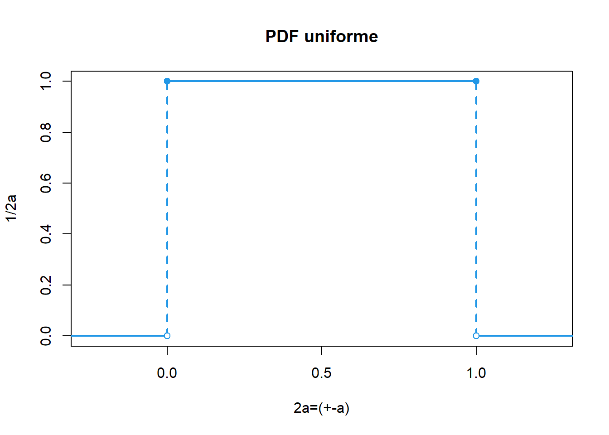

Metodos para estimar la incertidumbre
Distribuciones de muestreo
Un estadístico es una función de las variables aleatorias observables en una muestra, como la media muestral \(\bar Y\), la varianza muestral \(S^2\), Max, Min, la amplitud (Rango = max – min), la mediana muestral, etc.
Se usan estadísticos para hacer inferencias o estimaciones, acerca de parámetros de población desconocidos. Todos los estadísticos son funciones de las variables aleatorias observadas en una muestra, por tanto también son variables aleatorias. En consecuencia, todos los estadísticos tienen distribuciones de probabilidad, que llamaremos distribuciones muestrales.
La distribución muestral de un estadístico proporciona un modelo teórico para el histograma de frecuencia relativa de los posibles valores del estadístico que observaríamos por medio de muestreo repetido.
Si se seleccionan muestras aleatorias de tamaño 20 en una población grande. Se calcula la media muestral \(\bar X\) para cada muestra; la colección de todas estas medias muestrales recibe el nombre de distribución muestral de medias, así como tambien se puede obtener la distribución muestral de las desviaciones estándar como se ilustra en la siguiente figura:

Un elemento importante en los procesos de simulación es identificar las distribuciones de probabilidad apropiadas para los datos. Esto, normalmente, requiere analizar información empírica o histórica, y ajustarla a alguna distribución.
Estimación de la incertidumbre
Existen 2 formas principales de estimar la incertidumbre, metodos no estocásticos como la GUM y metodos estocásticos como la simulación monte carlo (MCM), que hacen alusión a distribuciones de probabilidad. Generalmente se mide la incertidumbre con el metodo GUM y se cerciora el resultado con el metodo estocástico MCM.
Métodos estocásticos para estimar la incertidumbre

Simulación Determinística
Simula múltiples resultados posibles dados los mismos valores de entrada. Puede ser útil para explorar la variabilidad en las salidas del modelo de medición.
Monte Carlo
Implica la generación de múltiples muestras aleatorias de las variables de entrada, la propagación de estas muestras a través del modelo de medición y el cálculo de la incertidumbre a partir de la distribución de las salidas.
Inferencia Bayesiana
Utilizan el teorema de Bayes para actualizar la información a priori sobre los parámetros del modelo en función de los datos observados. A partir de las distribuciones a posteriori de los parámetros, se pueden calcular intervalos de credibilidad que reflejen la incertidumbre en las estimaciones.
Métodos de remuestreo
Implica el muestreo de los datos disponibles para generar múltiples conjuntos de datos simulados. A partir de estos conjuntos de datos, se calculan las estimaciones de interés y se utiliza la variabilidad entre estas estimaciones para inferir la incertidumbre.
Formas de remuestreo
Jackknife
Consiste en generar múltiples conjuntos de datos “dejando fuera” un solo punto de datos en cada iteración y recalculando el estimador en cada conjunto de datos.
Es útil para identificar la sensibilidad del estimador a la exclusión de puntos de datos individuales y proporciona una estimación robusta de la incertidumbre sin hacer suposiciones sobre la distribución de los datos.
Bootstrap
Muestreo con reemplazo
Métodos de Sensibilidad Estocástica:
Evalúan la sensibilidad de las salidas del modelo a las variaciones en las entradas bajo condiciones de incertidumbre. Pueden proporcionar información valiosa sobre qué variables de entrada tienen el mayor impacto en la incertidumbre de la salida.
Métodos no estocásticos para la estimación de incertidumbre

Guía para la Expresión de la Incertidumbre de Medición (GUM)
La GUM es un estándar internacional que proporciona un marco sistemático para la estimación y expresión de la incertidumbre de la medida. Se basa en la identificación de fuentes de incertidumbre y su propagación a través del modelo de medición.
Top-Down
Este enfoque implica la descomposición del proceso de medición en sus componentes individuales, identificando las fuentes de incertidumbre y cuantificándolas por separado. Luego, estas incertidumbres individuales se combinan utilizando reglas de propagación de errores.
Basado en el procesamiento de datos registrados a largo plazo, derivados de resultados de ensayos de aptitud, muestras de control del laboratorio, datos bibliográficos publicados, etc.
Método Bottom-Up
Comienza con mediciones individuales y luego combina las incertidumbres asociadas con cada medida para obtener una incertidumbre total.
Basado en una sucesión de etapas de cálculo que tienen en cuenta los errores provenientes de cada una de las operaciones analíticas descompuestas en actividades primarias.
MCM es una alternativa a la GUM cuando
La estimación de la magnitud de salida (mensurando) y su incertidumbre asociada provista por la GUM podría no ser confiable
la pdf para la magnitud de salida del mensurando se aparta de una distribución normal
para validar los resultados de la GUM
Librerías de R para estimar la incertidumbre
| Librería | Nombre | Descripción |
|---|---|---|
| boot | Funciones Bootstrap | Proporciona funciones para el remuestreo para estimar intervalos de confianza y otras medidas de incertidumbre para estadísticas y parámetros |
| uncertainty | Estimación de incertidumbre y análisis de contribución | Ofrece herramientas para la propagación de incertidumbre en cálculos y modelos. Permite realizar análisis de sensibilidad y estimar la incertidumbre en los resultados |
| car | Companion to Applied Regression | incluye funciones para calcular intervalos de confianza y realizar pruebas de hipótesis que pueden ser útiles para estimar la incertidumbre en modelos |
| propagate | propagación de incertidumbre | Ofrece herramientas para realizar análisis de sensibilidad y estimar la incertidumbre en los resultados. |
| gamlss | Generalized Additive Models for Location Scale and Shape | útil para el modelado de distribuciones de probabilidad complejas y puede ser utilizada para estimar la incertidumbre en modelos estadísticos más avanzados. |
Distribuciones de probabilidad para estimar incertidumbre
Distribución normal
Una distribución ampliamente usada y la más importante de toda la estadística, diversas poblaciones y fenómenos numéricos son representados por esta distribución por ejemplo
Errores de medición en experimentos científicos
Mediciones antropométricas
Tiempos de reacción en experimentos psicológicos
Mediciones de inteligencia y aptitud
Función de distribución de probabilidad
Esta distribución depende de los parámetros de localización y escala, determinados por la media \(E(X)=\mu\) y la desviación estándar \(sd = \sigma\),
El valor de \(\sigma\) es la distancia desde \(\mu\) hasta los puntos de inflexión de la curva (los puntos donde la curva cambia de concavidad de hacia abajo a hacia arriba).
La función de distribución de probabilidad está dada por:
\[\LARGE f(x)=\frac{1}{\sqrt{2\pi}\sigma}e^{-\frac{(x-\mu)^2}{2\sigma^2}} \] Con \(-\infty<\mu<\infty\) y \(\sigma>0\)
Si una variable se distribuye normal se denota de la forma:
\[\LARGE x \sim N(\mu, \sigma^2)\]
Aplicativo de distribuciones de probabilidad continuas
Distribución rectangular ó uniforme
En una distribución rectangular cada valor en un intervalo dado tiene la misma probabilidad, o sea la función de densidad de probabilidad es constante en este intervalo.
Sea \(X∼U(a,b)\), es decir, una variable aleatoria con distribución uniforme en el intervalo (a,b), con \(a,b \quad \varepsilon \quad \mathbb{R}\):
- La función de densidad de probabilidad es :
\[ f(x)=\begin{cases} \frac{1}{b-a}, & \mbox{si x $\varepsilon \quad \mathbb{R}$,}\\ 0, & \mbox{e.o.c.} \end{cases} \]
La función de distribución acumulada (CDF) es \[ F(x)=P(x \leq \frac{x-a}{b-a}) \]
La esperanza o valor medio es
\[E(x)=\frac{a+b}{2}\]
- La varianza
\[E(x)=\frac{(b-a)^2}{12}\]

Se usa para estimar la incertidumbre cuando:
Un certificado da unos límites sin especificar el nivel de confianza (por ejemplo, 25 mL \(\pm\) 0,05 mL)
Se ha hecho una estimación en forma de un rango máximo (\(\pm\)a) sin conocimiento de la forma de la distribución.
https://huggingface.co/spaces/FreddyHernandez/discrete_uniform
El rango de una distribución de probabilidad se refiere al conjunto de todos los posibles valores que puede tomar una variable aleatoria en esa distribución. Es la diferencia entre el valor máximo y el valor mínimo de esta variable.
Ejemplo
Un químico estima un factor de contribución entre 7 y 10, pero cree que el valor podría ser cualquiera entre esos dos valores, pero no tiene idea de si alguna de las partes del rango tiene mayor probabilidad de ser que otra. Esto es una descripción de una función de distribución rectangular con un rango 2a=3 (semi rango de a=1,5).
Sea la función de estimación de incertidumbre rectángular.
La siguiente fórmula se usa si la incertidumbre que se desea calcular es por especificaciones o por resulución del equipo análogo, en cada caso se reemplaza el valor de a por cada cada valor.
\[u(x)=\frac{a}{\sqrt 3}\] En el caso que un equipo sea digital, la fórmula de la incertidumbre asociada a la resolución es:
\[u(x)=\frac{a}{\sqrt {12}}\]
Se puede calcular una estimación de la incertidumbre estándar. Usando el rango antes indicado, a=1,5, resulta una incertidumbre estándar de:
\[u(x)=\frac{1,5}{{\sqrt 3}} = 0,87\]
Distribución triángular
La función de distribución de probabilidad es:
\[ f(x)=\begin{cases} \frac{2(x-a)}{(b-a)(c-a)}, & \mbox{si $a\leq x < c$,}\\ \frac{2(b-x)}{(b-a)(b-c)}, & \mbox{si $c\leq x < b$,}\\ 0, & \mbox{e.o.c.} \end{cases} \]
La grafica de la función de distribución de probabilidad es:

- La esperanza o valor medio es
\[E(x)=\frac{a+b+c}{3}\]
- La varianza
\[E(x)=\frac{a^2+b^2+c^2+ab+ac+bc}{6}\]
Para estimar incertidumbre se usa cuando
La información disponible está mas delimitada que en una distribución rectangular. Los valores cercanos a la mitad de la distribución son más probables que los próximos a los límites.
Se ha hecho una estimación en forma de un rango máximo \((\pm a)\) descrito por una distribución simétrica.
Sea la función de estimación de incertidumbre triángular
\[u(x)=\frac{a}{\sqrt 6}\]
Aplicaciones de la incertidumbre